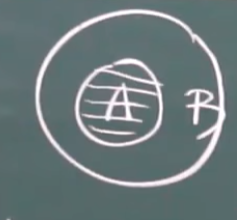
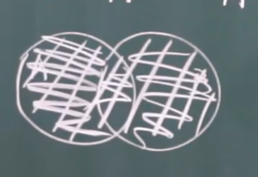
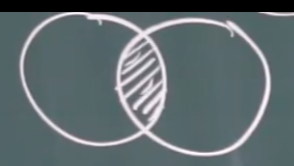
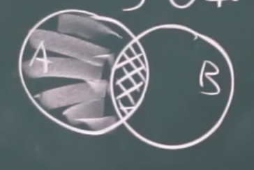
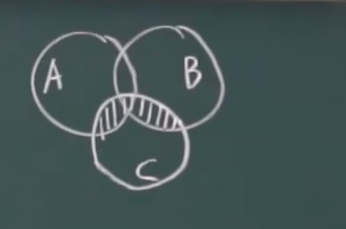
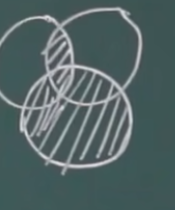
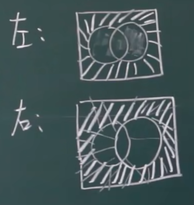

概率论与数理统计 （1）
概率论与数理统计
确定性现象/必然现象
确定性：一定发生/一定不发生
随机/偶然：可能发生，可能不发生
统计规律：事件发生的规律
实验：观测，测量，实验
随机试验：1）在相同的条件下可以重复
2）结果不止一个
3）无法预测
结果用E来表示
事件：每一种结果就叫一个事件
随机事件：随机发生的事件
基本事件：一个事件不能再分或者没有必要再分（相对于实验目的来说）
复合事件：基本事件组成复合事件
必然事件：一定发生（$\Omega$）
不可能事件：一定不发生（$\phi$）
样本空间：所有的基本事件的集合
样本点：样本空间的元素
事件之间的关系
包含
定义A发生必然导致B发生就是A包含于B，或者B包含A

注意这两个符号：$\subset$和$\in$的区别：前者地位平等，阐述的是集合与集合的关系；后者地位不平等，阐述的是集合于元素之间的关系！
相等
如果
并（和）
定义他们是A或者B发生：

注意这样的一些性质值得我们的注意：
交（积）
定义A，B同时发生为他们的交：

差
定义一个发生另一个不发生的区域叫两个事件的差：

多个事件
多个事件的和：
多个事件的并：
无限可列：能按一个规律拍成一个序列就叫无限可列
互不相容与对立事件
如果A，B不同时发生，就有以下简记：
如果一个集合下，不是A就是B，那就称呼A,B是对立事件
于是又有新的性质
1)
2)互相对立的事件一定互不相容
3）互不相容适用于多个事件，对立却只用于描述两个事件的关系
完备事件组
如果我们列举出来的一些互不相容的事件把所有情况说全了：
运算律
1）交换律：
2）结合律：
3)分配律


4)德摩根律

例子：ABC都是试验随机事件：
1）A发生：A
2）只有A发生：$A \bar B\bar C$
3)有A，B，C卡有一个发生：$A \bar B\bar C+\bar A B\bar C+\bar A \bar B C$
4)ABC同时发生：ABC
5）ABC至少一个发生：A+B+C
6)至多一个发生：$\bar A \bar B\bar C+A \bar B\bar C+\bar A B\bar C+\bar A \bar B C$
7)恰有两个：$A B\bar C+A B\bar C+A \bar B C$
8)至少两个：$A B\bar C+A B\bar C+A \bar B C+ABC$或者$AB+BC+AC$